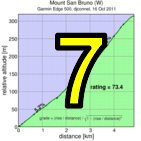
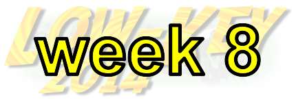

|  |  |  |
| Results are closed! |
| results? | right here! |
| profile |  |
| distance | 2.63 miles (4.2 km) |
| climbing | 1332 ft (405 meters) |
| grade | 9.64% |
| where? | see below |
| when? | 22 Nov 2014 |
| what time | no registration needed climb starts @ any time Saturday |
| Result | Results are closed |
| waiver | no waiver for self-rides |
| how? |  |
| how much? | free! |
| why? | Ask not why; just do! |
| coordinator | |
| volunteers | sign up! |
| weather | Bay area winds |
| links | Marin Headlands trail map |
| deja-vu? | New! |
| route map | |
Sorry, folks! Our insurance requires all riders wear helmets during the climb, and we follow the USA Cycling rule against ear buds or other head phones. Rock to tunes before the climb, perhaps, but we need riders to pay attention to what's happening during the climb...
It's time for Low-Key to get dirty! And this week we present you a spectacular course, the Marin Headlands!
The Marin Headlands is a fanstastic resource literally within walking distance of San Francisco, just across the Golden Gate Bridge. The course today includes two of the most popular cycling climbs: Miwok (southern portion) and Marincello, the latter of the same name as the housing development which was narrowly avoided here. Each of these climbs is wide, fairly smooth dirt, rideable on either road, cross, or mountain bikes. As of this writing, hard-tail mountain bikes have the Strava KOMs, but road bikes can give the mountain bikes a run for their money.
To get to the Headlands, you cross the Golden Gate Bridge and follow signs soon after crossing. You can either park in the lot at Conzelman road and ride up that to the McCullough Road traffic circle, then turn left onto the Coastal Trail which you'll ride down all the way to Bunker Road (the last portion technically not part of Coastal Trail, which diverts to the left). Or you can exit at Bunker, drive under the tunnel, and then park along that road near an access point to the Miwok trail.
Miwok comes first. It is the steeper of the two, with several sections which will have you reaching for your low gears, but nothing so steep it presents a traction problem. The climb begins just past the intersection with Bobcat. The top is at the peak soon after the intersection with Wolf Creek Trail.
After summiting Miwok, there's a brief descent before a junction. Take the left here, cross a small bridge, and you'll soon begin your descent of Old Springs Trail. Take care here: there's a lot of hikers, trail runners, and climbing cyclists. Low-Key enforces a 15 mph average speed limit on dirt descents, so take your time here. Old Springs has several sections of shallow stairs. Stay off your saddle and keep your weight back here. It will be slightly rough going on a road bike, but still not a problem. You've got plenty of time to reach the next climb, so don't worry about rushing.
When you reach the stables, walk your bike (or at least ride slowly) to the left, then look to the right for the start of Marincello Trail. This is the second climb of the day. Marincello is more of a long, steady grind, not as steep as Miwok, but long enough to test your climb endurance.
Once you hit the peak, soon before the intersection with Bobcat Trail, continue onward to Bobcat to make sure you trigger the finish line with your GPS data. Then enjoy the view, which is spectacular here.Congratulations! You've completed this week's timed climb. To get back to where you started, bear left on Bobcat and stay on that through the extended descent. This is a much faster descent than Old Springs, but is still popular with hikers, so watch for them around blind turns, and please be courteous in passing. Bobcat leads all the way back to Miwok.
Net rider time will be taken as the sum of the times up Miwok (from just north of Bobcat to the summit) and up Marincello (from just past the start of the trail to just before the intersection with Miwok/Bobcat). Riders have 4 hours to get from Miwok to Marincello. This is huge time and leaves plenty of opportunities to explore a bit in between if you wish. Time over 4 hours would be counted toward overall time.
The Marin Headlands Trail Map is here.
Want more? You should! One possibility is to check out the trails on the other side of Tennessee Valley before climbing Marincello. The climb of Miwok will test your switchback skills and handling on steep, uneven climbs. Then take the Wolf Ridge Trail to the Coastal Fire Road, which you can descend to the Tennessee Valley Trail. Turn left thre to return to the gate near the stables where you can get the Marincello trail, climb 2 of this Low-Key week.
Additionally, by starting near the Golden Gate Bridge, you get to ride Coastal Trail between Bunker and McCullough, and Conzelman, described next.
From San Francisco, you can either ride to the start or take Golden Gate Transit. GGT will take you to Bunker Road. When riding, you can either ride through the tunnel on Bunker or ride up Conzelman, as is described next.
For driving, there's plenty of places to park along Bunker Road, which provides access the Miwok Trail. Or park in the lot at the bottom of Conzelman Road then ride Conzelman to McCullough Road where you can join the Coastal Trail to the left as you turn onto McCullough from the traffic circle. This dirt descent takes you to Bunker Road from which you can access Miwok. After the Low-Key route, climb Coastal the other direction, then descend Conzelman back to the parking.
This is a self-timed week, so we won't have check-in and results. However, there's still volunteer options! You can volunteer to help using our volunteer form! Thanks!!!
Low-Key is all about a group of friends riding up a hill together. It's like any other informal group ride, except we time you to the top and report the results on our web site. But we have no road closures, no lead vehicle, no follow vehicle. We are traffic, sharing the roads with other traffic, following the laws and courtesy which applies to traffic. Think of it as a human-assisted Strava. We're each responsible for our own actions out there, on and off the bike, both as users of the road as as courteous visitors to the neighborhoods we pass through. "Ceci n'est pas un race".